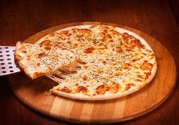

Food is any substance consumed to provide nutritional support for an organism. Food is usually of plant, animal or fungal origin, and contains essential nutrients, such as carbohydrates, fats, proteins, vitamins, or minerals.
Pizza
 Pizza (Italian: [ˈpittsa], Neapolitan: [ˈpittsə]) is a savory dish of Italian origin consisting of a usually round, flattened base of leavened wheat-based dough topped with tomatoes, cheese, and often various other ingredients (such as anchovies, mushrooms, onions, olives, pineapple, meat, etc.), which is then baked at a high temperature, traditionally in a wood-fired oven. [1] A small pizza is sometimes called a pizzetta. A person who makes pizza is known as a pizzaiolo.
Burger
 A hamburger, or simply a burger, is a dish consisting of fillings—usually a patty of ground meat,
typically beef—placed inside a sliced bun or bread roll. The patties are often served with cheese,
lettuce, tomato, onion, pickles, bacon, or chilis with condiments such as ketchup, mustard,
mayonnaise, relish or a "special sauce", often a variation of Thousand Island dressing, and are
frequently placed on sesame seed buns. A hamburger patty topped with cheese is called
a cheeseburger. Under some definitions, and in some cultures, a burger is considered a sandwich.
A hamburger, or simply a burger, is a dish consisting of fillings—usually a patty of ground meat,
typically beef—placed inside a sliced bun or bread roll. The patties are often served with cheese,
lettuce, tomato, onion, pickles, bacon, or chilis with condiments such as ketchup, mustard,
mayonnaise, relish or a "special sauce", often a variation of Thousand Island dressing, and are
frequently placed on sesame seed buns. A hamburger patty topped with cheese is called
a cheeseburger. Under some definitions, and in some cultures, a burger is considered a sandwich.